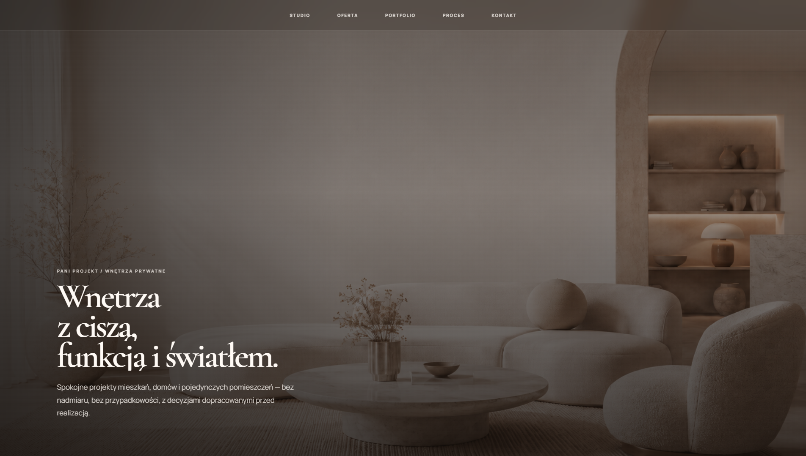
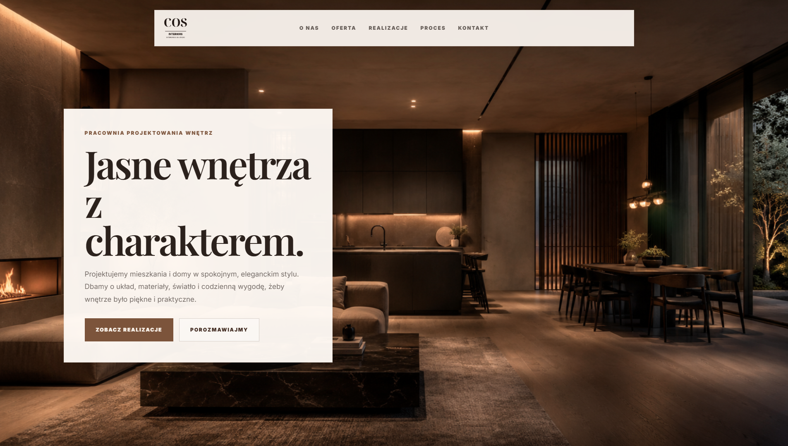
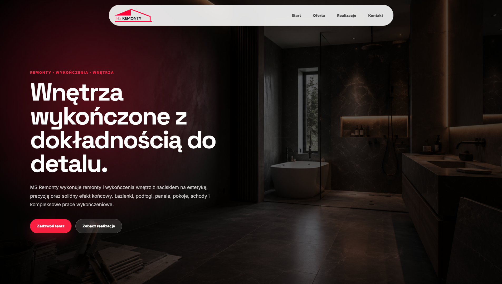

Lepszy pierwszy ekran.
Klient po kilku sekundach ma czuć, że firma jest profesjonalna.

21project / web design / strony internetowe
21project projektuje minimalistyczne strony dla firm, które chcą wyglądać profesjonalnie, budzić zaufanie i prowadzić klienta do kontaktu bez zbędnego chaosu.

Manifest
Strona ma wyglądać spokojnie, ale działać konkretnie: jasno pokazać ofertę, zbudować zaufanie i zostawić użytkownikowi prosty następny krok.
Kierunek
Czysty układ, mocne kadry, dużo oddechu, techniczne detale i subtelny akcent digital. Strona ma wyglądać jak dopracowany produkt, a nie jak kolejny gotowiec.
Klient po kilku sekundach ma czuć, że firma jest profesjonalna.
Każda sekcja ma mieć funkcję, a nie tylko zajmować miejsce.
Układ prowadzi do kontaktu bez szukania i bez rozpraszania.
Oferta
Na głównej stronie nie wciskamy cennika od razu. Najpierw pokazujemy poziom, klimat i sposób pracy. Ceny są normalnie opisane w zakładce Oferta.
Portfolio
Nie iframe, nie scrollowanie w ramce. Statyczne screeny, czyste mockupy i pełna kontrola nad proporcjami.
Jasna, spokojna strona dla projektantki wnętrz. Nacisk na obraz, przestrzeń i eleganckie prowadzenie użytkownika.
Zobacz case →
Strona o bardziej niszowym, editorialowym rytmie. Duże kadry, spokojne przewijanie i mocny pierwszy ekran.
Zobacz case →
Strona usługowa nastawiona na szybkie zrozumienie oferty, wiarygodność i prosty kontakt bez chaosu.
Zobacz case →
Miękki, estetyczny kierunek dla marki beauty. Prosty układ usług i szybka ścieżka do zapisu.
Zobacz case →

Przerywnik
Proces
Ustalamy styl, cel strony, branżę, materiały i to, co użytkownik ma zrobić po wejściu.
Powstaje układ, treści, proporcje, grafiki i rytm przewijania.
Kod, mobile, optymalizacja, publikacja i finalne dopracowanie detali.
Kontakt